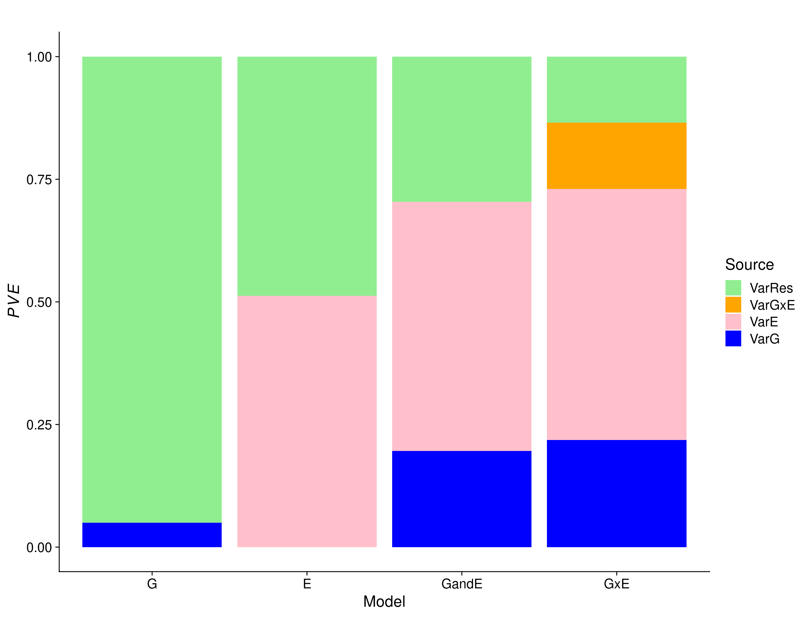
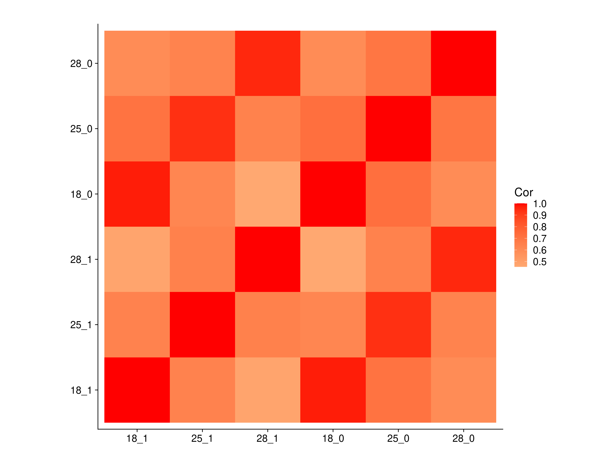

Last updated: 2025-04-16
Checks: 7 0
Knit directory: dgrp_lifespan_gxe/
This reproducible R Markdown analysis was created with workflowr (version 1.7.0). The Checks tab describes the reproducibility checks that were applied when the results were created. The Past versions tab lists the development history.
Great! Since the R Markdown file has been committed to the Git repository, you know the exact version of the code that produced these results.
Great job! The global environment was empty. Objects defined in the global environment can affect the analysis in your R Markdown file in unknown ways. For reproduciblity it’s best to always run the code in an empty environment.
The command set.seed(20241004) was run prior to running
the code in the R Markdown file. Setting a seed ensures that any results
that rely on randomness, e.g. subsampling or permutations, are
reproducible.
Great job! Recording the operating system, R version, and package versions is critical for reproducibility.
Nice! There were no cached chunks for this analysis, so you can be confident that you successfully produced the results during this run.
Great job! Using relative paths to the files within your workflowr project makes it easier to run your code on other machines.
Great! You are using Git for version control. Tracking code development and connecting the code version to the results is critical for reproducibility.
The results in this page were generated with repository version 1c45a58. See the Past versions tab to see a history of the changes made to the R Markdown and HTML files.
Note that you need to be careful to ensure that all relevant files for
the analysis have been committed to Git prior to generating the results
(you can use wflow_publish or
wflow_git_commit). workflowr only checks the R Markdown
file, but you know if there are other scripts or data files that it
depends on. Below is the status of the Git repository when the results
were generated:
Ignored files:
Ignored: .snakemake/
Ignored: output/E_fit/
Ignored: output/E_het_var_fit/
Ignored: output/G_fit/
Ignored: output/G_het_var_fit/
Ignored: output/GandE_fit/
Ignored: output/GandE_het_var_fit/
Ignored: output/GxE_by_chr_fit/
Ignored: output/GxE_by_chr_het_var_fit/
Ignored: output/GxE_fit/
Ignored: output/GxE_gwas/
Ignored: output/GxE_gwas_fit/
Ignored: output/GxE_gwas_het_var_fit/
Ignored: output/GxE_het_var_fit/
Ignored: output/mvgblup_fit/
Ignored: output/rrm_fit/
Ignored: output/test_sets/
Ignored: run/
Ignored: slurm/
Untracked files:
Untracked: analysis/dgrp_lifespan_gxe_genomic_results_OLD.Rmd
Untracked: scripts/run_fit_gwas_gxe_grammar_indicator.sbatch
Untracked: scripts/run_fit_gwas_gxe_grammar_means.sbatch
Untracked: scripts/run_fit_gwas_gxe_grammar_sex.sbatch
Untracked: scripts/run_fit_gwas_gxe_grammar_temp.sbatch
Untracked: scripts/run_fit_gwas_gxe_lm.sbatch
Untracked: scripts/run_fit_gwas_gxe_lmm_2envs_stand.sbatch
Untracked: scripts/run_fit_gwas_gxe_lmm_indicator.sbatch
Untracked: scripts/run_fit_gwas_gxe_lmm_indicator_stand.sbatch
Untracked: scripts/run_fit_gwas_gxe_lmm_means.sbatch
Untracked: scripts/run_fit_gwas_gxe_lmm_means_stand.sbatch
Untracked: scripts/run_fit_gwas_gxe_lmm_scaled_within_env_pheno_2envs_stand.sbatch
Untracked: scripts/run_fit_gwas_gxe_lmm_sex.sbatch
Untracked: scripts/run_fit_gwas_gxe_lmm_sex_stand.sbatch
Untracked: scripts/run_fit_gwas_gxe_lmm_temp.sbatch
Untracked: scripts/run_fit_gwas_gxe_lmm_temp_stand.sbatch
Note that any generated files, e.g. HTML, png, CSS, etc., are not included in this status report because it is ok for generated content to have uncommitted changes.
These are the previous versions of the repository in which changes were
made to the R Markdown
(analysis/dgrp_lifespan_gxe_genomic_varcomps_results.Rmd)
and HTML
(docs/dgrp_lifespan_gxe_genomic_varcomps_results.html)
files. If you’ve configured a remote Git repository (see
?wflow_git_remote), click on the hyperlinks in the table
below to view the files as they were in that past version.
| File | Version | Author | Date | Message |
|---|---|---|---|---|
| Rmd | 1c45a58 | fmorgante | 2025-04-16 | Small fix |
| html | 523df1f | fmorgante | 2025-04-16 | Build site. |
| Rmd | e0a570b | fmorgante | 2025-04-16 | Update results |
| html | ec63d8c | fmorgante | 2025-01-30 | Build site. |
| Rmd | a860e4f | fmorgante | 2025-01-30 | Add variance partition |
###Load libraries
library(ggplot2)
library(cowplot)
library(tidyr)
library(dplyr)
prefix <- "dgrp_lifespan_gxe"The goal of this analysis is to partition the phenotypic variance using linear mixed models including genotype only, environment only, genotype + environment, genotype + environment + genotype \(\times\) environment information.
We used data from Huang et al. (2020), which has life span measurements for \(n=176\) lines at 3 temperatures (18C, 25C, 28C) for the 2 sexes (coded as 1=females and 0=males), which results in \(q=1,056\) observations. The authors showed that there is extensive \(G \times E\) affecting life span. In the present work, we used both temperature and sex as \(c=2\) environmental variables, for a total of \(r=6\) environments.
We fitted the following linear mixed models:
where
\(y\) is a \(q\)-vector of phenotypic observations, \(\mu\) is a \(q\)-vector of intercept values, \(g\) is a \(q\)-vector of additive genetic values, \(g \sim N_q(\mathbf O, \mathbf{ZGZ^\intercal} \sigma^2_g)\), \(\mathbf Z\) is a \(q \times n\) incidence matrix, \(\mathbf G\) is a \(n \times n\) genomic relationship matrix (GRM), \(e\) is a \(q\)-vector of environmental values, \(e \sim N_q(\mathbf O, \mathbf{E} \sigma^2_e)\), \(\mathbf E\) is a \(q \times q\) matrix of similarity based on environmental variables, computed as \(\mathbf E = \mathbf{XX}^\intercal\), \(\mathbf X\) is a \(q \times c\) matrix of environmental measurements, \(ge \sim N_q(\mathbf O, \mathbf{ZGZ^\intercal \circ E} \sigma^2_{ge})\), \(\epsilon\) is a \(q\)-vector of residual values, \(\epsilon \sim N_q(\mathbf O, \mathbf{I} \sigma^2_\epsilon)\).
These models were fitted to the whole data using a Bayesian approach as implemented in the \(\sf BGLR\) package.
We also computed genetic correlations across the environments using multivariate GBLUP – \(Y = M + U + R\):
where
\(Y\) is an \(n \times r\) matrix of phenotypic observations, \(M\) is an \(r\)-vector of intercept values, \(U\) is an \(n \times r\) matrix of additive genetic values, \(U \sim MN_{n \times r} (\mathbf O, \mathbf G, \mathbf \Sigma_U)\) and \(\mathbf \Sigma_U\) is an \(r \times r\) covariance matrix, \(R\) is an \(r \times r\) matrix of residual values, \(R \sim MN_{n \times r} (\mathbf O, \mathbf I_n, \mathbf \Sigma_R)\) and \(\mathbf \Sigma_R\) is an \(r \times r\) covariance matrix.
model <- c("G", "E", "GandE", "GxE")
pheno <- "original_pheno"
i <- 0
res_var <- as.data.frame(matrix(NA, ncol=6, nrow=4))
colnames(res_var) <- c("model", "VarG", "VarE", "VarGxE", "VarEps", "VarTot")
for(met in model){
dat <- readRDS(paste0("output/", met, "_fit/", prefix, "_", pheno, "_", met, "_fit_whole_data.rds"))
i <- i + 1
res_var[i, 1] <- met
if(!is.null(dat$ETA$G$varU)){
res_var[i, 2] <- dat$ETA$G$varU
} else {
res_var[i, 2] <- NA
}
if(!is.null(dat$ETA$E$varU)){
res_var[i, 3] <- dat$ETA$E$varU
} else {
res_var[i, 3] <- NA
}
if(!is.null(dat$ETA$GxE$varU)){
res_var[i, 4] <- dat$ETA$GxE$varU
} else {
res_var[i, 4] <- NA
}
res_var[i, 5] <- dat$varE
res_var[i, 6] <- sum(res_var[i, 2:5], na.rm=TRUE)
}
###PVE
res_var$propG <- res_var$VarG/res_var$VarTot
res_var$propE <- res_var$VarE/res_var$VarTot
res_var$propGxE <- res_var$VarGxE/res_var$VarTot
res_var$propEps <- res_var$VarEps/res_var$VarTot
res_var_long <- res_var %>% select(model, VarG, VarE, VarGxE, VarEps) %>%
gather(value="Var", key="Source", VarG, VarE, VarGxE, VarEps)
res_var_long <- transform(res_var_long, model=factor(model, levels=c("G", "E", "GandE", "GxE")),
Source=factor(Source, levels=c("VarEps", "VarGxE", "VarE", "VarG"),
labels=c("VarRes", "VarGxE", "VarE", "VarG")))
p <- ggplot(res_var_long, aes(x = model, y = Var, fill = Source)) +
geom_bar(position="fill", stat="identity") +
scale_fill_manual(values = c("lightgreen", "orange", "pink", "blue")) +
labs(x = "Model", y = expression(italic(PVE)), fill="Source", title="") +
theme_cowplot(font_size = 18)
print(p)Warning: Removed 5 rows containing missing values or values outside the scale range
(`geom_bar()`).
| Version | Author | Date |
|---|---|---|
| ec63d8c | fmorgante | 2025-01-30 |
There is definitely evidence of GxE.
pheno <- "original_pheno"
dat <- readRDS(paste0("output/mvgblup_fit/", prefix, "_", pheno, "_mvgblup_fit_whole_data.rds"))
corg <- cov2cor(dat$ETA$G$Cov$Omega)
colnames(corg) <- rownames(corg) <- gsub("y_", "", colnames(dat$ETAHat))
corg_melt <-reshape2::melt(corg)
colnames(corg_melt) <- c("Env1", "Env2", "Cor")
p <- ggplot(corg_melt, aes(x = Env1, y = Env2, fill = Cor)) +
geom_tile() +
labs(x = "", y = "", fill="Cor", title="") +
scale_fill_gradient2(low = "#075AFF",
mid = "#FFFFCC",
high = "#FF0000") +
coord_fixed() +
theme_cowplot(font_size = 18)
print(p)
| Version | Author | Date |
|---|---|---|
| 523df1f | fmorgante | 2025-04-16 |
This is also confirmed by the estimates of the cross-environment genetic correlations, which are different from unity in the majority of comparisons.
The residual variances are also different across environments 92.9131651, 21.4166144, 9.7341183, 102.8613531, 30.4585922, 10.0329902, justifying fitting models with heterogenous residual variance.
sessionInfo()R version 4.1.2 (2021-11-01)
Platform: x86_64-pc-linux-gnu (64-bit)
Running under: Rocky Linux 8.5 (Green Obsidian)
Matrix products: default
BLAS/LAPACK: /opt/ohpc/pub/libs/gnu9/openblas/0.3.7/lib/libopenblasp-r0.3.7.so
locale:
[1] LC_CTYPE=en_US.UTF-8 LC_NUMERIC=C
[3] LC_TIME=en_US.UTF-8 LC_COLLATE=en_US.UTF-8
[5] LC_MONETARY=en_US.UTF-8 LC_MESSAGES=en_US.UTF-8
[7] LC_PAPER=en_US.UTF-8 LC_NAME=C
[9] LC_ADDRESS=C LC_TELEPHONE=C
[11] LC_MEASUREMENT=en_US.UTF-8 LC_IDENTIFICATION=C
attached base packages:
[1] stats graphics grDevices utils datasets methods base
other attached packages:
[1] dplyr_1.1.4 tidyr_1.3.1 cowplot_1.1.3 ggplot2_3.5.1
loaded via a namespace (and not attached):
[1] Rcpp_1.0.13-1 plyr_1.8.9 pillar_1.9.0 compiler_4.1.2
[5] bslib_0.8.0 later_1.3.2 jquerylib_0.1.4 git2r_0.32.0
[9] workflowr_1.7.0 tools_4.1.2 digest_0.6.37 gtable_0.3.6
[13] jsonlite_1.8.9 evaluate_1.0.1 lifecycle_1.0.4 tibble_3.2.1
[17] pkgconfig_2.0.3 rlang_1.1.4 cli_3.6.2 rstudioapi_0.17.1
[21] yaml_2.3.10 xfun_0.49 fastmap_1.2.0 withr_3.0.2
[25] stringr_1.5.1 knitr_1.49 generics_0.1.3 fs_1.6.5
[29] vctrs_0.6.5 sass_0.4.9 tidyselect_1.2.1 rprojroot_2.0.4
[33] grid_4.1.2 glue_1.8.0 R6_2.6.1 fansi_1.0.6
[37] rmarkdown_2.29 reshape2_1.4.4 farver_2.1.2 purrr_1.0.2
[41] magrittr_2.0.3 whisker_0.4.1 scales_1.3.0 promises_1.3.0
[45] htmltools_0.5.8.1 colorspace_2.1-1 httpuv_1.6.11 labeling_0.4.3
[49] utf8_1.2.4 stringi_1.8.4 munsell_0.5.1 cachem_1.1.0